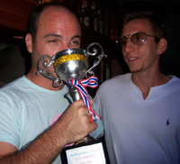
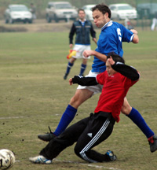
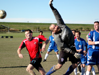
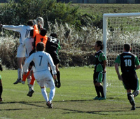

OLD STORIES - Nov 2006
|  |
|
Tokyo Hibs celebrate winning the Phuket 7's Open tournament. Full story. |
Celts ‘Kanto’ Quite Hold On…
Hachioji Park, Sun 26th Nov. More twilight robbery than daylight, but robbery it was as Sala sneaked past a thoroughly impressive Celts team in Saitama on Sunday.
Sala found themselves on the back foot for much of the game, particularly in the early stages and during the middle of the second period, before Guido popped up like a thief in the night to capitalize on Celts’ impotency in front of goal. more ...
RC.
Predatory Lions Become Amanis' Prey.
Hachioji Park, Sun 26th Nov. Hachioji Park was the venue where Lions aimed to go back to winning ways, and it looked like a great opportunity, especially when Lions found out that Rouven, a crucial midfielder for Amanis was absent.
Lions started with a 3-5-2, where Mohammed Birkiya and Ken Hersche played as left and right wing-backs very effectively, with Ken scoring from Gaafar's lay-off, beating the keeper by driving his shot into the far top corner from the right edge of the box.more ...
HS.
 |
|
Yasu Yomota & Gavin Duffy get into some mud wrestling |
Hibs Slip Past Celts in the Slime.
Misato, Sun 19th Nov. 2 trips out to Misato in 2 weeks was somewhat of a shock for the travel weary Hibs, particularly as conditions were against our style of football each time. Last week it was Hurrican winds of “Cyclone Sala” which went against us and this week it was torrential rain for this tough fixture against the Celts.
As the last fixture of the day we braved the worst of the conditions and with the pitch so waterlogged and the rain relentless; if not for the absent of some hooded teens selling hubcaps we could have been forgiven for thinking we were playing on a Sunday morning in Dagenham. East London. The Celts had strong Irish contingent with a Gaellic football background, enough for them to be considered “mudlarks” to borrow a horse racing term more ...
BC.
|  |
|
Paul James tucks away Geckoes 1st goal. |
Geckoes Crawling Up.
Misato, Sun 19th Nov. Not the prettiest exhibition of football on a cold damp Misato morning but another 3 Points on the board for WSG, although they did make it hard on themselves against a 9 man Jetro.
The game started in the same manner as the weather conditions and it took a surprise counter attack to rudely awaken the sleepy Geckoes. Jetro broke quickly and their sprightly winger found the head of Kobayashi leaving WSG 1-0 down and facing another humiliating defeat for the 2nd time this season. more ...
Gaz.
Sala Drift into Next Round…
Todoroki, Sat 18th Nov. At a charming Todoroki park (sans penalty boxes and symmetrical goalposts) on Saturday night, Sala came up against a team named after a theoretical pre-historic super-continent for the first time in club history.
On the day, captain Guido chose to spectate rather than play, mainly due to the grotesque swelling in his lower legs which has caused his shin pads to stretch so much, that they have become virtually unusable. more ...
RC.
|  |
|
Vags keeper Taylor happy to see this one go wide after misjudging the flight. |
Vagabonds Rampant
Misato, Sun 12th Nov. A very windy and slightly chilly afternoon was the setting for this crunch game between 2 teams which like to battle it out. Last season was a 1-0 defeat for the Vags against the same opposition so it was important to avenge that loss which had Vags endure a lousy season from that game onwards.
A brand new kit was enough to put a smile on everyone`s face, not to mention the extra skip in our step. Vags were changed since their last game (3-1 vs YCAC2nds). The loss of boys Graeme, Brian, Maz, Lyndsey etc allowed for the returns of Ian, Patrick, Gary and Chris into the team. more ...
Muzzy.
BFC win 4-1 (again).
Hachioji Park, Sat 11th Nov. Four different scorers found the net as BFC hit back from 1-0 down at half-time with a trouser-bursting second-half performance against the Kanto Celts on Saturday. The Eggman poached (eh, Jerry?!) a deserved equaliser at the start of the second half after Jon Day's shot was well blocked by the Celts goalkeeper. more ...
BD.
Hibs (almost) Blown Away at Misato.
|  |
|
Toby Long beats Hitoshi Ono to the ball only to see it go off the bar. |
Misato, Sun 12th Nov. Spirits high after their comfortable win over bottom-of-the-tabke Jetro in the quagmire of Oi Mud, Sala travelled this week to windy Misato to take on the all-conquering top-of-the-table Hibs. Sala had reason to be apprehensive heading into the match after conceding an astonishing total of 16 goals in the last two encounters between the two sides. Preparations weren`t helped when playmaker Shige again ventured to the wrong ground. In the absence of defensive stalwart Clarkey and strikers Roddy Charles and Giles Legg, Guido opted for a cautious approach, employing an unfamiliar 5-4-1 formation, leaving the tireless Toby Long up front by himself. more from Sala...
DB.
On Sunday morning two and half hours travel to Misato, a match against a physical Sala squad at an away pitch with violent gusts of wind was a dangerous combination for Hibs to solve. The above conditions considered, and playing without their usual intensity, Hibs somehow scraped a tie in their worst game of the season.. more from Hibs...
HO.
YCAC Winning Ugly.
YC&AC, Sun 12th Nov. Another sunday lunchtime at YCAC, another ugly win for the home side. Mustn't complain of course, theres many a team that would give up their last baguette for an ugly win and it allowed us and the rest of the chasing pack to sneak back a couple of points on the runaway Hibs, courtesy of our old friends Sala. more ...
ST.
Swiss Shuffle Past JETs.
Hachioji Park, Sat 11th Nov. The Swiss were to play the Jets at 9 am in Saitama. For the notoriously late Swiss, a 7:45 meeting in Roppongi was a bad omen and the boys almost staged a repeat of the forfeit from two years earlier which handed the Hibs the title on the last game. Fortunately, we made it to the ground with 5 minutes to spare with a full squad, JP even brought the kit! more from Swiss...
KN.
Big Guns to Face Off in FJ Wall Street Associates Cup.
Tokyo, Tues 7th Nov. 20 teams this year will do battle in the 4th Footy Japan Wall Street Associates Cup - 19 of them will be gunning to stop the Swiss Kickers claiming the cup for a fourth consecutive time. The Swiss will meet the winner of the preliminary match up between YCAC 1st XI and AFC Wanderers meaning that one of the big guns will be departing the tournament early doors. With the losers of the preliminary and first round games going into a Plate competition there's a lot more football to be played in this season's cup competition. more ...
FJ.
Embassy Battle to Another Win.
Misato, Sun 12th Nov. They say that it’s a mark of a good team when they can not play well and still win. Well it must also be a sign of something else because The Embassy managed to sneak away from Misato last Sunday with all three points despite being second best for large periods of what was, for the most part, a third rate game. While the Embassy will gladly take the points, establishing them at the top of the table as the only undefeated team, they will also know that if they are going to have to do better if they are going to stay there. more from BEFC...
OT.
YCAC Hand Swiss Their 1st Defeat.
YC&AC, Sun 5th Nov. Well, a wins a win, 3 points is 3 points, you get 1 more goal than them and you get the win and the 3 points. YCAC did exactly that and no more against the Swiss on Sunday. What else do you need to know? more from YCAC...
ST.
YCAC2 Fights Back Twice to Earn a Point.
YC&AC, Sun 5th Nov. As always the TML Division 2 is proving somethig of a challenge for YCAC2 this season. It seems that the standard of teams is generally improving and there is no such thing as an easy 3 points. Exactly how it should be! more from YCAC...
SM.
Celts Slump to 3rd Defeat on the Spin.
Misato, Sun 5th Nov. Another disappointing Misato Sunday morning for the Celts. Against the old rivals Saitama Jets, as they slumped to their 3rd consecutive defeat.
After the high of the opening day victory over the French, the Celts have since struggled, scoring just one goal in over 240 minutes of football - and that a rebound from a penalty. more from Celts...
RH.
Eggman hits hat-trick in 5-1 win.
Misato, Sun 5th Nov. Spookily, Evans had predicted in the taxi he would score a hat-trick. 'One with my right foot, one with my left foot and one with my head.' Even the taxi driver cracked up, almost skidding into a lamp-post. The Eggman had the last laugh, though, as his prophecy came true. Could you perhaps predict the other BFC strikers a hat-trick please, mate? more from BFC...
SL.